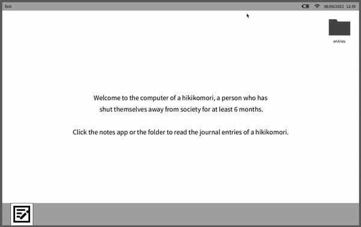

UCSB ART 22 - Computer Programming for the Arts
Spring 2022
Justin Liu's Portfolio
Exercise 1: Coding for Humans

The first image contains the drawing instructions I wrote for someone else to replicate. The second image is what I drew after following my own instructions. The third image is what my friend drew. I was a bit worried that my instructions were confusing, but based on the results, I'd say they were understandable.
Download exercise as a ZIP file.
Project 1: Drawing With Code
I recreated Victor Vasarely's Planetarische Folklore in Processing. I used GIMP to get the coordinate points for each shape and Digital Color Meter (on Mac) to get the color values. It was pretty time-consuming, but it looks pretty close to the original!
Download project as a ZIP file.
Exercise 2: For Loop & Repetition

I used a for loop to create a grid of circles, randomizing the colors for each at 15 frames per second. Hovering over a circle hides the circles in the same column and row.
Download exercise as a ZIP file.
Project 2: Animation & Interaction

I animated Victor Vasarely's Planetarische Folklore using the image I created for Project 1. Holding down the mouse button changes the colors in the background. The arrow keys stretch the foreground shapes in the direction that is pressed. I had to look up a lot of stuff in the process, but I like how the piece turned out.
Download project as a ZIP file.
Exercise 3: Collage (Still)

Every second, 4 different flower images are randomly chosen from a pool of 10 images. The chosen images are cropped, then put together to create a mixed flower.
Download exercise as a ZIP file.
Project 3: Mask
I've never owned a cat before, so I decided to animate one. The positions of the cat's eyes, nose, and mouth are determined by the speaker's volume.
Download project as a ZIP file.
Exercise 4.1: Collage (Animated)

I used the images from Exercise 3 to create an animated college. I wanted to simulate a flower blooming since the images are all flowers. To achieve this, I included linear, random, and circular motion.
Download exercise as a ZIP file.
Exercise 4.2: Generative Typography with Functions
I animated the word "ART" with the letters inspired by katakana, a Japanese syllabary. I could say something profound like "It takes countless attempts to make your art stand out" for this piece, but I just wanted to make something that looked cool.
Download exercise as a ZIP file.
Project 4: Expanded Cinema Part 1
Just a fair warning - the story for this project contains references to death. That being said, I planned out the story's paths through a flowchart. I also created a codebase in Processing (included in the ZIP file) that encompasses the basic structure of the story.
Download project as a ZIP file.
Exercise 5: Generative Typography with Objects
I practiced creating classes to animate the word "ART" again. Every second, the position of the letters and the color of the rectangles in the background are randomly chosen. The colors are mixed using subtractive blending, which is just a fancy way of saying I added blendMode(SUBTRACT) in my code.
Download project as a ZIP file.
Project 5: Expanded Cinema Part 2
I finished coding the story I wrote last week with some added details. I also implemented a few features: buttons for the choices and scrolling text to give off a visual novel feeling. I drew the images myself, so apologies in advance.
Download project as a ZIP file.
Exercise 6: Game Elements
My group (William, Jesus, and I) recreated the basic elements of Pong. The first sketch moves the paddle up and down without it going off-screen. The second sketch uses boolean functions to bounce the ball, reset it to the left side of the screen when it hits the right side, and detect when it makes contact with a paddle.
Download exercise as a ZIP file.
Project 6: Game
Using last week's exercise as a base, my group created an original game called "Ghostkeeper". The goal of the game is to keep the ghost within the paddles for 45 seconds. I still haven't beaten the hard level yet, but maybe that's why it's a hard level.
Download project as a ZIP file.
Project 7.1: Final Proposal
For my final project, I want to learn more about hikikomori. Hikikomori is a Japanese term used to broadly describe people who have withdrawn from society and confined themselves in their houses/rooms, usually for at least 6 months. I plan on conveying the experience of a hikikomori through journal entries and articles.
Download project as a ZIP file.
Project 7.2: Final Project
My final project is a desktop screen of a hikikomori. Clicking on the folder or the notes app icon sends the user to the hikikomori's journal entries. I wrote the hikikomori's experiences based on peer-reviewed articles and a documentary.
Download project as a ZIP file.